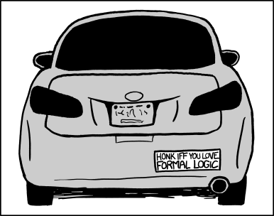

Grandiloquent Bloviator
Like Tyler Cowen for the C-students
xkcd: Formal Logic
2012-04-04

This intersects four of my favorite things: xkcd, bumper stickers, honking, and logic. Grand Slam
.
Labels: Bumper Stickers, xkcd, Favorites
← Newer Post
Home
Older Post →
Trey Miller
For the last twenty years, I've been trying to talk less. And now, this. Please send comments, suggestions, or feedback to
t@grandiloquentbloviator.com
.
Archive
View full archive »
Static archive · gb.adaliaworks.com